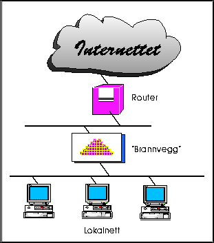

Internettet er et såkalt åpent datanett, dvs. et nettverk der man må anta at all datakommunikasjon foregår på åpne linjer, ala det offentlige telenettet. Med ``åpne linjer'', menes her at selve trafikken ikke er kodet på noe som helst vis.
Dette betyr for det første at trafikk kan avlyttes. Det betyr også at "alle kan snakke med alle" prinsippet gjelder så fremt man ikke innfører sperrer og begrensninger.
At "alle kan snakke med alle", betyr igjen at en bedrift som knytter seg til Internettet kan risikere å blottlegge bedriftens interne datasystemer for hele Internettet. Hvis sikkerheten i bedriftens interne nett er god, hadde ikke dette behøvd å bety så mye, men all erfaring viser at dette er unntaket snarere enn regelen!
I dag finnes det imidlertid kraftige løsninger for å kople bedriftsinterne nett opp mot Internettet - uten at man dermed blottlegger maskiner og informasjon i disse lokalnettene. Disse løsningene baserer seg på såkalte brannveggmaskiner.
Ideen bak dette, er at man sørger for at all trafikk inn og ut av bedriften går gjennom, eller kontrolleres av brannveggmaskinen. Denne maskinen har installert spesialprogramvare for å gjøre slik aksesskontroll.
Brannveggmaskinene vil noen ganger operere i nært samarbeid med en eller flere rutere som også har mulighet for å filterere trafikk basert på såkalte aksesslister i ruteren, men andre ganger ligger disse filtreringsfunksjonene i selve brannveggen.
Det er svært mange muligheter og kombinasjoner når det gjelder oppsett av brannveggen og ruteren. Noen ganger kan man til og med bruke flere rutere og flere brannvegger som virker sammen og implementerer ulike nivåer av ``sluser'' mellom bedriftsnettet og Internettet.
Uten at man tråkker bedriftens interne driftsavdeling på tærne(!), må det kunne sies at oppsett, drift og konfigurasjon av brannveggløsninger bør overlates til eksperter på dette området! Slike konsulentfrimaer vil vanligvis anbefale anskaffelse av en kommersiell brannveggløsning. Eksempler på tre gode slike produkter, er Gauntlet fra Trusted Information Systems, JANUS fra Border Network Technologies samt Firewall-1 fra Checkpoint.
En ganske enkel brannveggløsning er antydet i figur 20.